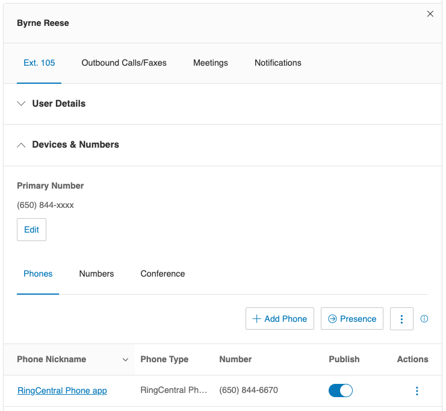
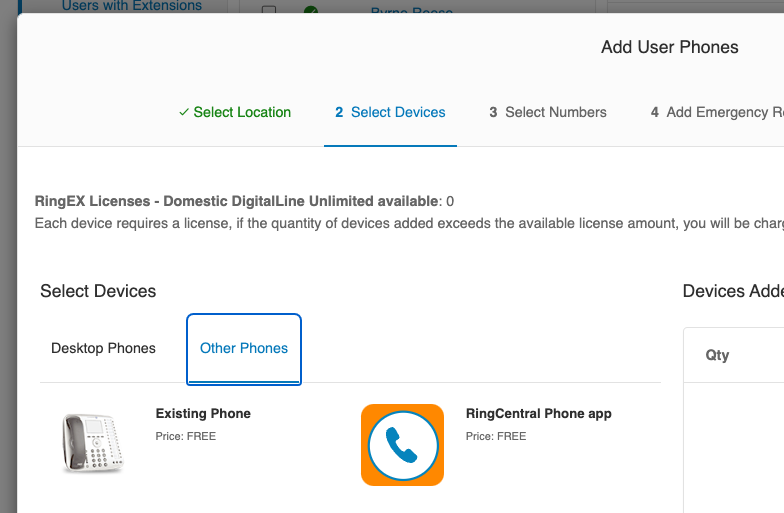
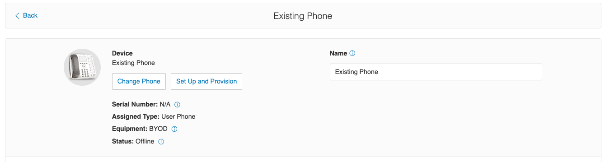
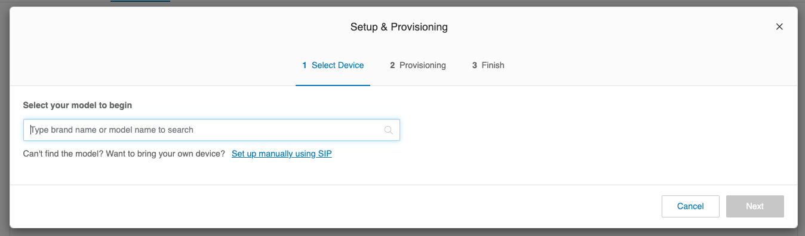
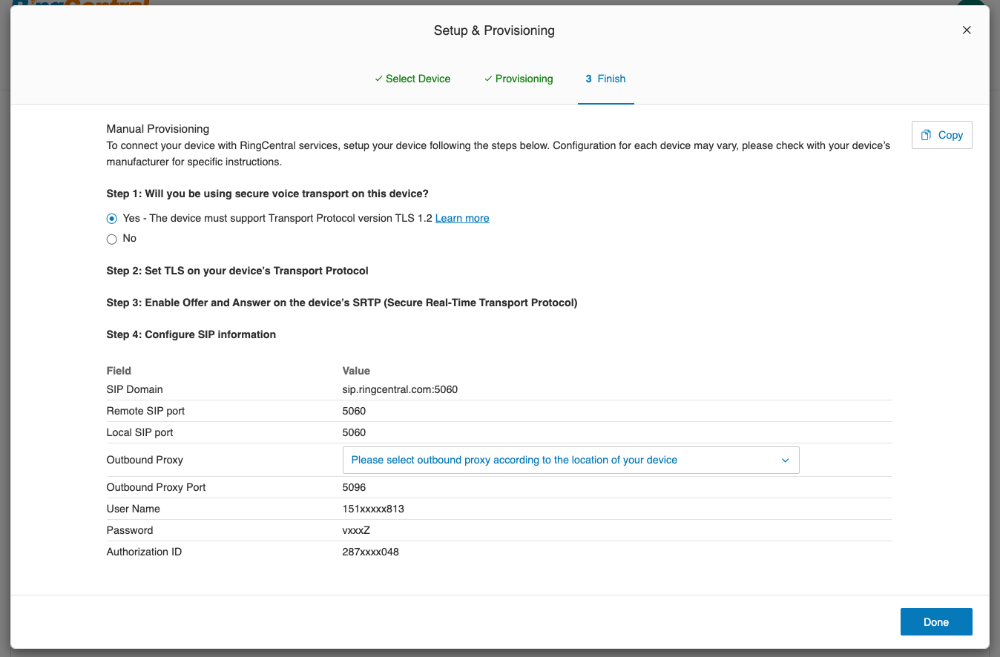

Getting Started
Install the SDK
pnpm add ringcentral-softphone
npm install ringcentral-softphone
Get SIP credentials from the web portal
You need an Existing Phone device for the user or extension that will place and receive calls.
- Sign in to the RingCentral portal, open the user or extension, and expand Devices & Numbers.

- Select an Existing Phone device, or create one if necessary. A RingCentral desktop or mobile app device cannot be used with this SDK.

- Select Set Up and Provision.

- Select Set up manually using SIP.

- Copy the SIP domain, outbound proxy, username, password, and authorization ID.

Remove the port from the SIP domain: use sip.ringcentral.com, not
sip.ringcentral.com:5061. Keep the port in the outbound proxy.
Get SIP credentials from the REST API
Use
List Extension Devices
to find a device whose API type is OtherPhone. The API type SoftPhone
represents a RingCentral app device and cannot be used by this SDK.
Call
Read Device SIP Information
for the selected device. Choose the proxyTLS value for the region nearest your
workload because the SDK connects over TLS:
{
"domain": "sip.ringcentral.com",
"outboundProxies": [
{
"region": "NA",
"proxy": "sip20.ringcentral.com:5090",
"proxyTLS": "sip20.ringcentral.com:5096"
}
],
"userName": "16501234567",
"password": "password",
"authorizationId": "802512345678"
}
The credential lookup demo shows the complete REST API flow.
Configure and register
import Softphone from "ringcentral-softphone";
const softphone = new Softphone({
domain: process.env.SIP_INFO_DOMAIN!,
outboundProxy: process.env.SIP_INFO_OUTBOUND_PROXY!,
username: process.env.SIP_INFO_USERNAME!,
password: process.env.SIP_INFO_PASSWORD!,
authorizationId: process.env.SIP_INFO_AUTHORIZATION_ID!,
});
softphone.on("invite", async (inviteMessage) => {
const callSession = await softphone.answer(inviteMessage);
callSession.once("disposed", () => {
console.log("Call ended");
softphone.revoke();
});
});
await softphone.register();
Attach the invite listener before registering so an inbound call cannot arrive
between registration and listener setup.
| Option | Required | Description |
|---|---|---|
domain |
Yes | SIP domain without a port. |
outboundProxy |
Yes | Regional TLS proxy including its port. |
username |
Yes | SIP username. |
password |
Yes | SIP password. |
authorizationId |
Yes | SIP authorization ID. |
codec |
No | OPUS/16000 (default), OPUS/48000/2, or PCMU/8000. |
ignoreTlsCertErrors |
No | Disable TLS certificate checks in a controlled development environment only. |
Types for options, invites, call sessions, outbound call sessions, and audio streamers are available from the package root. Inline values are inferred, so import these types only when a function or stored value needs an annotation:
import type {
CallSession,
InboundInvite,
OutboundCallSession,
SoftphoneOptions,
Streamer,
} from "ringcentral-softphone";
CommonJS consumers access the constructor through the package namespace:
const Softphone = require("ringcentral-softphone").default;
Call softphone.revoke() when the application no longer needs the
registration.
Debug registration
register() rejects when the initial registration fails. Listen for
registrationError to handle a later registration refresh failure:
softphone.on("registrationError", (error) => {
console.error("Registration refresh failed", error);
});
softphone.enableDebugMode();
Debug mode prints complete SIP exchanges, which can contain identities, phone numbers, call metadata, and authentication material. Do not enable it in production or publish its output without redacting sensitive values.
Custom prefixes help distinguish logs from multiple instances:
softphone.enableDebugMode({
inboundPrefix: "Instance A receiving...\n",
outboundPrefix: "Instance A sending...\n",
});
TLS certificates
Certificate verification is enabled by default. Fix the certificate chain in
production. Set ignoreTlsCertErrors: true only in a trusted, controlled
development environment because it permits man-in-the-middle attacks.
Next, answer or place a call.